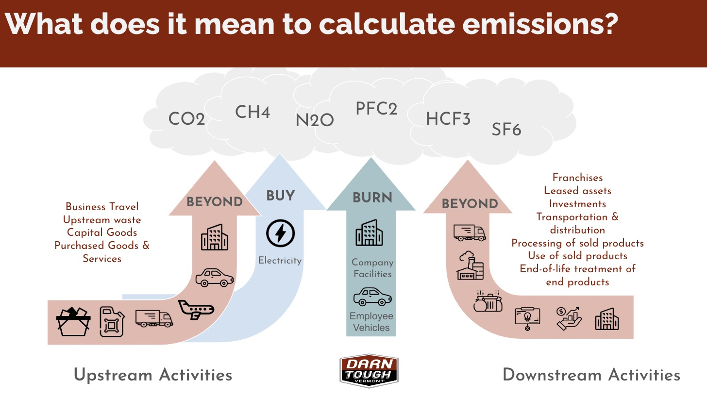
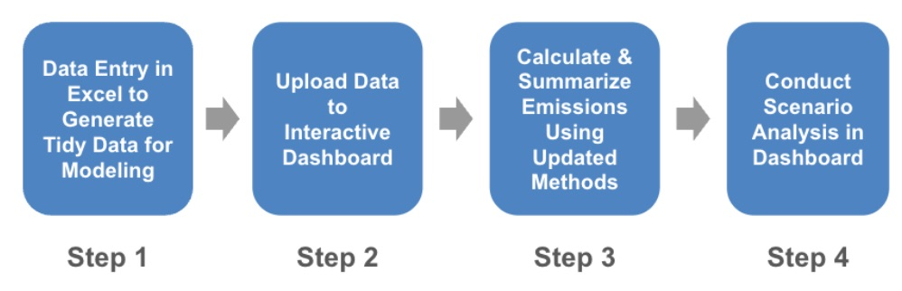
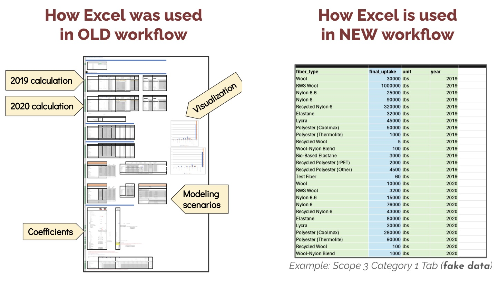
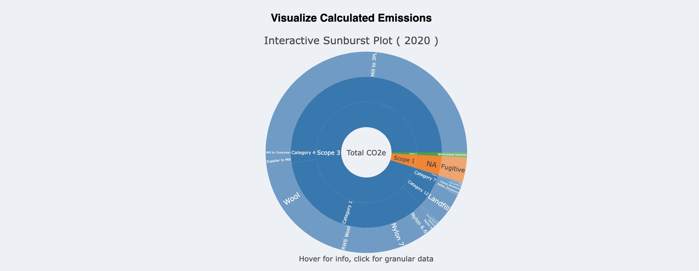
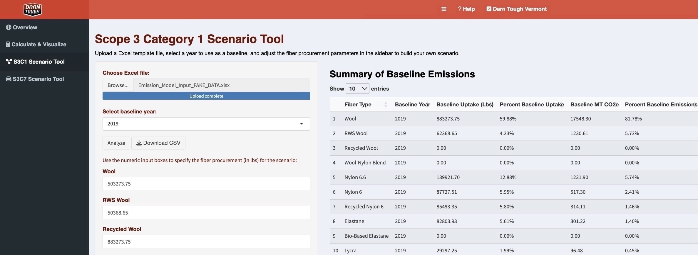
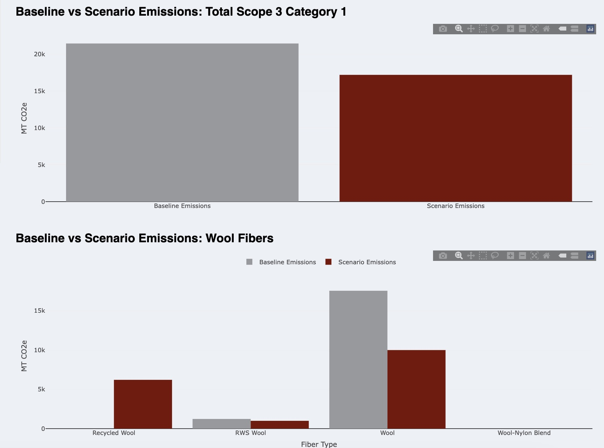

About Darn Tough Vermont
Our team’s client, Darn Tough Vermont, is a Vermont-based outdoor sock company that is serious about prioritizing sustainability and creating long-lasting products. Known for their lifetime warranty, Darn Tough offers customers a free new pair of socks for shipping back a worn-out pair, which gets recycled into blankets for the U.S. military. While this lifetime warranty is the company’s landmark sustainability initiative, they are increasingly concerned about their carbon footprint, as Darn Tough strives to align its operations with the 2030 target set by its largest retailer, REI (Recreational Equipment, Inc.). Specifically, this target is to achieve a 55% reduction in total GHG emissions by 2030 (compared to 2019 baseline level). Reaching the 2030 target will require Darn Tough to develop effective ways to model their emissions, so they can best understand the critical points in their supply chain that are responsible for the most emissions, in addition to points where emissions can be most easily reduced.
Understanding GHG Emissions
Calculating an organization’s carbon footprint is a multifaceted endeavor, requiring a meticulous evaluation of every step in the product lifecycle, from raw material sourcing to manufacturing, distribution, and even post-consumer handling. Darn Tough follows the Greenhouse Gas (GHG) Protocol, which categorizes emissions into three distinct scopes:
Scope 1 (Burn): Direct emissions from sources owned or controlled by the company
Scope 2 (Buy): Indirect emissions from purchased energy
Scope 3 (Beyond): All other indirect emissions, including upstream and downstream activities
For Darn Tough, this involves accounting for emissions at every stage of their sock production, from manufacturing fibers, shipping products, to recycling worn-out socks through their warranty program.

Caption: Presentation slide describing the framework for modeling Darn Tough’s emissions using the GHG Protocol.
The Challenge
Darn Tough, renowned for producing durable socks for the outdoor apparel industry, utilizes a blend of merino wool and synthetic materials. Their partnership with REI, which has set an ambitious target to reduce emissions by 55% from 2019 levels by 2030, underscores the urgency to refine their greenhouse gas emissions calculations. However, Darn Tough’s current method, which primarily uses Excel, is reliant on manual, non-reproducible calculations in Excel and poses challenges for the team, underscoring the need for a more streamlined and accurate solution.
Our Approach
To meet these challenges head-on, we defined three major objectives:
- Utilize Accurate Methodology: Address discrepancies and errors in the existing emissions calculations by updating and standardizing the methodology.
- Streamline Calculation Process: Develop a reproducible, efficient method to replace the complex and unwieldy Excel-based process.
- Conduct Scenario Analysis: Create tools that allow for scenario planning and data-driven decision-making to reduce emissions effectively.

Caption: New analytical workflow for Darn Tough’s carbon accounting and sustainability analysis.
Delivering Three Solutions
1) Updated Methodology
Our first task was to refine Darn Tough’s calculation methodology. We conducted extensive research and improved calculations, ensuring alignment with industry standards and the Greenhouse Gas (GHG) Protocol, including using the latest emission factors. Along the way, we ensured all updates were thoroughly documented. This update not only improved accuracy but also provided a robust foundation for future calculations.
2) Excel Input Template & Emissions Calculator Application
Next, we tackled the complexity of Darn Tough’s existing workflow. Darn Tough’s original method used a complex Excel sheet to model their emissions. This approach was time consuming, resource intensive, and difficult to replicate yearly. By automating the emissions calculations using the R programming language, we created a reproducible approach.
Our streamlined solution involved creating a simplified Excel Input Template with tidy, formula-free tables and automating calculations with R. This new model takes inventory data as inputs and produces precise emissions totals, eliminating the potential for manual errors and significantly simplifying the process.
To make these improvements user-friendly, we then developed the Emissions Calculator Application using Shiny. This app allows users to upload their data, select scopes, and calculate emissions effortlessly. It also provides downloadable outputs and interactive visualizations, making it easier to understand and manage carbon emissions.
The new Emissions Calculator Application makes it easier for Darn Tough to calculate their emissions. Users can upload data, select specific scopes, calculate emissions, and generate downloadable outputs and interactive visualizations all in one centralized interface.

Caption: Presentation slide comparing how Excel was used in the old workflow to how it is being used in the newly developed workflow. In the new workflow, Excel is only used for data entry.

Caption: Screenshot of the basic interface for computing emissions in the Emissions Calculatior Application. Specifically, this image shows Scope 2 emissions based on data in the uploaded Excel template (Note: Fake Data).

Caption: The Interactive Sunburst Plot allows users to analyze emissions in terms of Scope, Category (for Scope 3), and input variables (e.g., Wool Fiber). Through clicking on a segment of the plot, users can more easily see the granular data. In addition, the user can hover over a segment to access exact values for emissions and percent of total emissions (Note: Fake Data).
3) Scenario Analysis Tool (part of the Emissions Calculator Application)
Beyond calculating emissions, our Scenario Analysis Tool helps Darn Tough identify practical ways to reduce their carbon footprint. Users can input hypothetical changes, such as switching to recycled wool, and compare the impact on emissions against a baseline year. This feature provides actionable insights for making informed, effective decisions on emission reductions.

Caption: Screenshot showing the basic interface of the Scope 3 Category 1 Scenario Analysis Tool, which allows the user to evaluate emissions under scenarios with different fiber types and quantities (Note: Fake Data).

Caption: As part of the tool, users can look at visualizations comparing baseline emissions to emissions under a new scenario. For example, this image looks at the impact of substituting some normal wool fiber for recycled wool (Note: Fake Data).
Moving Forward
With the Emissions Calculator Application, Darn Tough is now equipped to calculate, visualize, and reduce their carbon emissions more efficiently. This streamlined process not only saves time but also allows the company to focus on broader sustainability initiatives. As Darn Tough continues to innovate and improve, we are confident that their best sock is yet to come, and that they have the tools necessary to meet their 2030 target.
Acknowledgments
We extend our deepest gratitude to Kristen Graf from Darn Tough Vermont, Dr. Enze Jin, Dr. Carmen Galaz Garcia, the MEDS Capstone Committee, and our entire MEDS cohort for their invaluable support and feedback throughout this project.
Caption: Darn Tough Team celebrating after faculty review presentations.
Caption: Darn Tough Team rocking their socks at Montecito Peak.
Citation
@online{ghanadan, flora hamilton, carly caswell, annie adams2024,
author = {Ghanadan, Flora Hamilton, Carly Caswell, Annie Adams, Linus},
title = {Creating and {Implementing} an {Analytical} {Workflow} for an
{Outdoor} {Apparel} {Company’s} {Carbon} {Accounting} and
{Sustainability} {Analysis}},
date = {2024-06-20},
url = {https://linusghanadan.github.io/blog/2024-6-20-post/},
langid = {en}
}